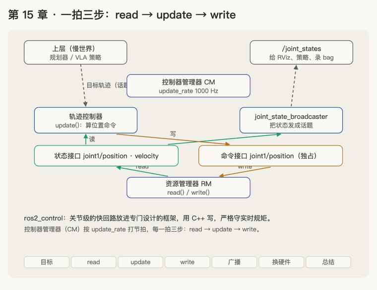

第 15 章 · 实时与 ros2_control 架构
本章回答：为什么机械臂的关节控制不能直接写成"订阅 → 回调里算 → 发布"的普通节点？"实时"到底要求什么？ros2_control 由哪几块组成，1 kHz 的控制回路在里面怎么跑？
讲解日期：2026-11-13 · 上一章：第 14 章 launch 进阶、测试与调试 · 下一章：第 16 章 硬件组件与控制器
对应原文：ros2_documentation/source/Capabilities/Motion-planning/Real-Time-Programming.rst；design/articles/120_realtime_background.md；ecosystem/control.ros.org/doc/getting_started/getting_started.rst（Architecture 一节）（路径相对ros2/materials/）
对应 study-plan 阶段 F1、F2，动手里程碑 R-M7 前半。接机器人软硬件架构专题第 1、6 章（分层闭环、底层控制）。
本章缩写：RT = Real-Time（实时）；PREEMPT_RT（Linux 的"完全可抢占"实时补丁）；CM = Controller Manager（控制器 / 管理器）；RM = Resource Manager（资源 / 管理器）；DOF = Degrees Of Freedom（自由度）；PID = Proportional-Integral-Derivative（比例 / 积分 / 微分控制器）；UML = Unified Modeling Language（统一 / 建模 / 语言）；KUKA-RSI = KUKA Robot Sensor Interface（KUKA 工业机器人的外部控制接口）；EtherCAT = Ethernet for Control Automation Technology（以太网 / 控制自动化技术：工业实时总线）；CAN = Controller Area Network（控制器 / 局域 / 网络）。全部缩写见 附录 · 缩写与术语表
本章先看总图，再分 3 步：
| 步 | 内容 | 状态 |
|---|---|---|
| 0 | 总图：控制器管理器的 read → update → write 回路 | ✅ |
| 1 | 实时是什么：截止时间、抖动、哪些操作不能出现在回路里 | ✅ |
| 2 | ros2_control 架构：控制器管理器、资源管理器、控制器、硬件组件 | ✅ |
| 3 | 接口与配置：命令接口 / 状态接口、URDF 里的 <ros2_control> 标签、YAML、spawner |
✅ |
讲解
总图 · 一个周期里发生什么

可交互版：animations/15-ros2-control-loop.html（内置浏览器：http://localhost:8340/15-ros2-control-loop.html）。
类比：工厂流水线的节拍。 传送带每 1 毫秒走一格：先读（每个工位报告当前状态）→ 再算（班长根据目标和现状算出每个工位下一步怎么做）→ 再写（把指令发到每个工位）。不管班长今天想得多复杂，节拍不能乱：晚了 1 毫秒，零件就掉地上。
第 1 步 · 实时是什么
依据：Capabilities/Motion-planning/Real-Time-Programming.rst（下称"实时教程"）、materials/design/articles/120_realtime_background.md（下称"实时背景"）。
实时 ≠ 快，而是准时：回路必须周期性地更新，并在截止时间之前完成；能容忍的偏差（抖动，jitter）很小（实时教程 Background 一节）。
| 回路 | 频率 | 晚了会怎样 |
|---|---|---|
| 电机电流环（驱动板） | 10–40 kHz | 电机失控 |
| 关节位置 / 力矩环 | 0.5–1 kHz | 机械臂抖动、撞击；倒立摆倒下（实时教程的例子） |
| 学习策略（VLA、RL） | 10–50 Hz | 动作卡顿，但下层仍能稳住 |
（分层频率见机器人软硬件架构专题总览第 1 节。）
哪些操作是实时回路里的大忌（实时教程、实时背景 "Memory management" 等节）：
- 动态分配 / 释放内存（
new、malloc、Python 里随手建列表）：耗时不确定； - 缺页（page fault）：用到还没调进内存的页，CPU 停下来等磁盘；对策是启动时
mlockall锁住内存、预先分配好； - 会无限期阻塞的同步原语：等一把可能被别人长时间占着的锁；
- 打印日志、文件读写、网络收发这类 I/O。
操作系统也要配合：普通 Linux 调度器不保证准时。常见方案是打 PREEMPT_RT 补丁（让内核几乎处处可被高优先级任务抢占），或用 Xenomai 这类双内核（实时背景 "Real-time operating systems" 一节；Developer-Tools/Build/Building-Realtime-rt_preempt-kernel-for-ROS-2/）。实时线程还要设高优先级（SCHED_FIFO）、绑定 CPU 核。
这对 ROS 2 意味着什么？ 第 9 章说过：普通 executor 调度复杂、有优先级反转、开销不小，不适合硬实时。Python 更不行（垃圾回收、GIL）。所以：关节级的快回路放进专门设计的框架里（ros2_control），用 C++ 写，严格遵守上面几条；话题、服务这些"慢世界"的东西留在外面。 这正是 ros2_control 的定位。
第 2 步 · ros2_control 架构
依据：materials/ecosystem/control.ros.org/doc/getting_started/getting_started.rst（下称"入门文档"）Architecture 一节。
| 部件 | 职责 | 类比 |
|---|---|---|
| 控制器管理器 CM（Controller Manager） | 装载、激活、停用、卸载控制器；把控制器要的接口和硬件给的接口配对，冲突就报错；用 update() 驱动整个控制回路；对外提供服务（命令行就是调这些服务） |
车间主任 |
| 资源管理器 RM（Resource Manager） | 用插件机制（pluginlib）加载硬件组件，管理它们的生命周期和接口；回路里负责 read() 和 write() |
仓库管理员：管着所有设备 |
| 控制器（Controller） | 继承 ControllerInterface 的插件；每个周期 update()：读最新状态、算出命令、写进命令接口。基于托管节点的生命周期（第 11 章） |
各工段的班长 |
| 硬件组件（Hardware Component） | 真正和电机驱动、传感器通信（EtherCAT、CAN、串口……）；同样是插件 | 一台台设备 |
一个周期（入门文档 Controller Manager 一节）：
read() ── RM 让每个硬件组件读取最新状态（关节位置、速度、力）写进状态接口
update() ── CM 依次调用每个激活控制器的 update()：读状态接口，算命令，写命令接口
write() ── RM 让每个硬件组件把命令接口里的值发给硬件
频率由控制器管理器参数 update_rate 决定（比如 1000 Hz）。默认的 ros2_control_node 把这个回路跑在单独的线程里，能用实时调度时会用。
关键设计：控制器和硬件之间不走话题，走"接口"。 接口就是一块共享的内存变量（double），读写只是一次赋值，没有序列化、没有消息传递、没有内存分配。快回路就这样避开了第 1 步列的所有雷。话题只出现在边上：控制器订阅上层发来的目标（比如一条轨迹），用实时安全的缓冲区交给回路线程；joint_state_broadcaster 把状态接口的值发布成 /joint_states（第 13 章）。
第 3 步 · 接口与配置
两种接口（入门文档 Hardware Components 一节、ros2_control/hardware_interface/doc/hardware_interface_types_userdoc.rst）：
- 状态接口（state interface）：硬件报上来的，只读。如
joint1/position、joint1/velocity、joint1/effort、力传感器的force。 - 命令接口（command interface）：发给硬件的，同一时刻只能有一个控制器占用。如
joint1/position（位置控制）、joint1/velocity、joint1/effort（力矩控制）。
控制器声明自己要哪些接口；CM 在激活时配对，两个控制器抢同一个命令接口会被拒绝。
三种硬件组件（入门文档）：
| 类型 | 能力 | 例子 |
|---|---|---|
| System（系统） | 读 + 写，多自由度，可有复杂传动 | 整台工业臂（一个通信通道，如 KUKA-RSI）、人形机器人的手 |
| Sensor（传感器） | 只读 | 关节编码器、六维力传感器 |
| Actuator（执行器） | 读 + 写，单自由度 | 一个电机、一个阀；各电机独立 CAN 通信时也可每个关节一个 |
写进 URDF：硬件配置放在 URDF（通常是 xacro）的 <ros2_control> 标签里（入门文档 "Hardware Description in URDF" 的 RRBot 例子）：
<ros2_control name="RRBotSystemPositionOnly" type="system">
<hardware>
<plugin>ros2_control_demo_hardware/RRBotSystemPositionOnlyHardware</plugin>
</hardware>
<joint name="joint1">
<command_interface name="position">
<param name="min">-1</param>
<param name="max">1</param>
</command_interface>
<state_interface name="position"/>
</joint>
<!-- joint2 同理 -->
</ros2_control>
控制器写进 YAML，启动用 spawner（ros2_control/controller_manager/doc/userdoc.rst）：
controller_manager:
ros__parameters:
update_rate: 1000 # 回路频率 Hz
joint_state_broadcaster:
type: joint_state_broadcaster/JointStateBroadcaster
position_trajectory_controller:
type: joint_trajectory_controller/JointTrajectoryController
ros2 run controller_manager spawner joint_state_broadcaster
ros2 run controller_manager spawner position_trajectory_controller --param-file config.yaml
ros2 control list_controllers # 看控制器及其状态
ros2 control list_hardware_interfaces # 看所有接口，哪些命令接口被谁占着
启动三步（入门文档 "Running the Framework for Your Robot"）：① 写控制器 YAML；② 在 URDF 里加 <ros2_control> 标签；③ launch 文件启动 ros2_control_node（带 robot_description 和 YAML）+ 各个 spawner。
换硬件不改控制器：仿真时把 <plugin> 换成仿真器的插件或 mock_components/GenericSystem（假硬件，命令原样回写成状态），控制器、YAML、上层代码一行不改。R-M7 就从 mock 硬件开始。
练习与作答记录
练习 15-1（第 1 步）：下面哪些操作不该出现在 1 kHz 控制回路里：(a) std::vector::push_back；(b) 读一个预先分配好的数组；(c) RCLCPP_INFO 打日志；(d) 等一把可能被 GUI 线程占着的互斥锁？
- 作答：（待作答）
练习 15-2（第 2 步）：用自己的话说清楚一个控制周期里 read()、update()、write() 各由谁执行、做什么。
- 作答：（待作答）
练习 15-3（第 3 步）：你同时 spawn 了一个位置轨迹控制器和一个速度控制器，二者都要 joint1/position 命令接口。会发生什么？
- 作答：（待作答）
练习 15-4（第 3 步）：为什么控制器和硬件之间用"接口"（共享变量）而不用话题？
- 作答：（待作答）
口诀
- 实时 = 准时：周期 + 截止时间 + 小抖动；不分配内存、不缺页、不阻塞、不做 I/O。
- 四件套：CM 管控制器和节拍，RM 管硬件，控制器算，硬件组件读写。
- 一拍三步：read 读状态 → update 算命令 → write 写硬件。
- 接口：状态接口只读，命令接口独占；走共享内存，不走话题。
- 配置：硬件进 URDF 的
<ros2_control>，控制器进 YAML，spawner 拉起来；换 mock 不改控制器。
本章复习卡片编号
R36–R37，见 ../review.md。
附录 · 延伸阅读
留给以后深入学习用，不影响本章主线。★ 是建议先读的。
materials/指ros2/materials/；不带前缀的路径在materials/ros2_documentation/source/下（design/、ecosystem/开头的在materials/下）；...表示省略了和上一条相同的目录。
推荐阅读
| 读什么 | 读哪里 | 读它为了什么 |
|---|---|---|
★ Real-Time-Programming.rst |
materials/ros2_documentation/source/Capabilities/Motion-planning/Real-Time-Programming.rst |
倒立摆实时 demo、缺页统计、mlockall。 |
★ 120_realtime_background.md |
materials/design/articles/120_realtime_background.md |
实时系统要求、内存管理、实时操作系统、编程模式；121_realtime_proposal.md：ROS 2 的实时方案提议。 |
Building-Realtime-rt_preempt-kernel-for-ROS-2 |
Developer-Tools/Build/Building-Realtime-rt_preempt-kernel-for-ROS-2/ |
编译 PREEMPT_RT 内核。 |
★ getting_started.rst |
materials/ecosystem/control.ros.org/doc/getting_started/getting_started.rst |
架构四件套、硬件组件类型、URDF 标签、启动三步。 |
userdoc.rst |
materials/ecosystem/ros2_control/controller_manager/doc/userdoc.rst |
控制器管理器参数、spawner / unspawner / hardware_spawner；controller_chaining.rst（级联控制）、async_updates.rst、clocks.rst。 |
doc |
materials/ecosystem/ros2_control/hardware_interface/doc/ |
接口类型、关节限位、mock 组件（第 16 章精读）。 |
resources |
materials/ecosystem/control.ros.org/doc/resources/ |
ROSCon 2023–2026 工作坊资料索引（roscon2026_workshop.rst、gsoc2026_physical_ai.rst 与学习型策略接入相关）。 |
| 本仓库 | robot-system-architecture 第 1 章（分层闭环）、第 5 章（总线与计算）、第 6 章（底层控制）。 | — |
数学原理
- 抖动（jitter）：实际周期和标称周期之差；看最大值，不只看平均。
公式清单
| 公式 / 规则 |
|---|
| 一个周期 = read()（硬件 → 状态接口）→ update()（控制器）→ write()（命令接口 → 硬件） |
代码对照：把本章的数字用代码算一遍
纯 Python 模拟，不需要 ROS 2（原因见第 1 章这一节）。代码在仓库本地
ros2/solutions/chapter-code/ch15_control_loop.py，配套测试tests/test_ch11_15.py；同名 notebook 在notebooks/ch15_control_loop.ipynb（讲解和代码放在一起，一格一格跑）。Mac 上直接能跑：
bash cd ros2/solutions/chapter-code uv run python ch15_control_loop.py # 一步一步打印 uv run pytest tests/test_ch11_15.py
讲义 ↔ 代码：
| 讲义 | 规则 / 数字 | 写法 | 跑出来 |
|---|---|---|---|
| 第 2 步 一个周期 | read → update → write | control_loop(hw, ctrl, 8) |
0.0, 0.01, …, 0.05, 0.05, 0.05 |
| 第 3 步 命令接口 | 控制器声明要独占的接口 | ctrl.command_interfaces() |
['joint1/position'] |
| 第 2 步 接口 = 共享变量 | 读写只是赋值 | hw.state / hw.command |
两个字典 |
| 第 1 步 实时 = 准时 | 量抖动 | measure_python_jitter() |
每次不同；本机约平均 1.5 ms、抖动 0.5 ms |
关键几行：
hw.read() # RM：硬件 → 状态接口
controller.update(hw.state, hw.command) # CM：控制器读状态、写命令
hw.write() # RM：命令接口 → 硬件
self.state.update(self._hw) # mock：上一拍的命令原样变成这一拍的状态
代码里才看得到的 3 件事：
- 控制器是编的：每拍朝目标走最多 0.01，只为看清三步的分工；真位置控制器通常直接转发目标或跑 PID。
- mock 硬件有一拍延迟：write 把命令写进"硬件"，下一次 read 才读回来，所以第 0 拍读到的是 0.0。
- Python 循环的抖动：
time.sleep(0.001)在普通 macOS / Linux 上实际要 1.1–1.5 ms，还时不时更久。这就是关节级快回路要放进 C++、实时内核的原因。结果每台电脑都不一样，测试只检查能跑通。
自己改一改（不影响练习答案）：
- 把
max_step改成 0.02，看几拍到达目标； - 把
measure_python_jitter的周期改成 0.01（100 Hz），看相对抖动是不是小了。